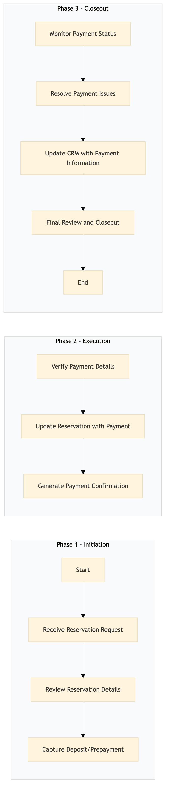

| Role | Steps |
|---|---|
| Revenue Manager | 1.1 1.2 2.1 2.2 3.1 3.2 3.3 3.4 |
| Front Desk Agent | 1.3 2.3 |
| Step | Name | Role | System | Input | Output | KPI | Dec? | Exc? | Pain Point / Risk |
|---|---|---|---|---|---|---|---|---|---|
| 1.1 | Receive Reservation Request | Revenue Manager | SynXis CRS | Reservation request from a travel agent or direct booking | Confirmed reservation details | Less than 2 minutes per reservation | Y | N | Handling multiple concurrent reservations |
| 1.2 | Review Reservation Details | Revenue Manager | Oracle OPERA Cloud | Confirmed reservation details | Reservation review report | Less than 3 minutes per reservation | Y | N | Ensuring accurate room type and rate |
| 1.3 | Capture Deposit/Prepayment | Front Desk Agent | Oracle OPERA Cloud | Guest payment information | Payment receipt | Less than 5 minutes per transaction | Y | N | Handling different payment methods |
| 2.1 | Verify Payment Details | Front Desk Agent | Oracle OPERA Cloud | Payment receipt | Verified payment status | Less than 2 minutes per transaction | Y | N | Ensuring correct payment amount |
| 2.2 | Update Reservation with Payment | Front Desk Agent | Oracle OPERA Cloud | Verified payment status | Updated reservation record | Less than 3 minutes per transaction | Y | N | Updating multiple reservations simultaneously |
| 2.3 | Generate Payment Confirmation | Front Desk Agent | Oracle OPERA Cloud | Updated reservation record | Payment confirmation email | Less than 4 minutes per transaction | Y | N | Ensuring correct email delivery |
| 3.1 | Monitor Payment Status | Revenue Manager | Oracle OPERA Cloud | Payment confirmation email | Payment status report | Daily review within 24 hours | Y | N | Tracking multiple payments |
| 3.2 | Resolve Payment Issues | Revenue Manager | Oracle OPERA Cloud | Payment status report | Resolved payment issue | Less than 1 hour per issue | Y | N | Handling unexpected payment failures |
| 3.3 | Update CRM with Payment Information | Revenue Manager | Marriott Bonvoy CRM | Resolved payment issue | Updated customer record | Less than 2 minutes per update | Y | N | Ensuring data consistency across systems |
| 3.4 | Final Review and Closeout | Revenue Manager | Oracle OPERA Cloud | Updated customer record | Closed reservation case | Less than 5 minutes per case | Y | N | Closing multiple cases simultaneously |
The process of handling deposit and prepayment processing at a Marriott full-service hotel involves capturing payments from guests during reservation booking and ensuring they are correctly recorded in the Oracle OPERA Cloud PMS.